EASE 4.3 User’s Guide & Tutorial

Installation and Registration Instructions
Before you begin to install EASE 4.3 on your computer, make sure your computer has sufficient memory and hard disk space.
EASE runs under Windows XP and Windows Vista operating systems on PC's with a VGA graphics system. Windows 95, Windows ME (Millennium), Windows 2000 and Windows NT are not supported. Multi core processors and 64-bit resolution are supported.
Minimum requirements are a machine with 256 MB or more of RAM, 600 MHz or higher clock speed and at least 2 gigabyte or more of hard disk space (EASE requires a minimum of 600 MB of hard disk space.) Faster, 800 MHz or higher clock speeds and larger RAMs are highly recommended for advanced users. Microsoft .NET Framework v2.0 is also required. Refer to Addendum 1 for more detailed equip-ment requirements.
Note 1. If you are using a virus protection system, you should disable it before beginning the installation.
Note 2. If you have EASE 3.0 installed on your machine, you do not need to uninstall it before installing EASE 4.3. The two programs are compatible and can run side by side on the same machine. You will be asked by the 4.3 install program if you want to uninstall EASE 3.0. The choice is yours.
Note 3. If you have EASE 4.0, 4.1 or 4.2 installed on your machine, you do not need to uninstall them before installing 4.3. The 4.3 In-
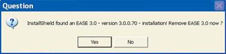
stall routine will automatically ask if you want to uninstall the previous version. Answer Yes to both uninstall prompts. You may also en-counter Shared File Detected and Read Only File Detected dialog boxes. In both case select Don’t display this message again and then click on Yes.
Important: The default file path structure for earlier versions of EASE and EASE JR placed the Data and Project files in an EASE40Data directory on your C: drive. The current MS recommended path structure places the Data and Project files in C:\Documents and Settings\All Users\Documents\EASE40Data in systems running under XP and in C:\Users\Public\Documents\EASE40Data on machines using Vista.
If you are installing 4.3 on a computer that has not had EASE installed on it previously, the install program will automatically use the MS recommended path structure. If you are updating a previous EASE installation to 4.3, the install program will give you the opportunity to “Reset all installation adjustments to default values”, meaning set them to the MS recommended file structure. VISTA users must select this option; it is optional for XP users, but for consistency and standardization we recommend selecting this option and using the new MS recommended file structure.
Note: If you are updating an existing EASE installation under VISTA or will be using the MS recommended file structure under XP, you must first “Upload “ your License Key. Otherwise, you will lose your License Key during the update. Open EASE and go to Help\Register and press the Upload button to upload your license key.
If you are updating an existing installation to the MS file structure, be aware that doing a Complete install will probably cre-ate a second set of data files unless you move your old data files before installing the new ones.
The install program will not detect the existing EASE40Data folder on your C: drive and will create a new one. To prevent this from happening, XP users should first move their EASE40Data folder to C:\ Documents and Settings\All Users\ Shared Documents\ and Vista users to C:\Users\Public\Documents\. The install program will then detect the old data and give you the option of leaving it un-touched or of overwriting/updating it.
Doing a Program Only install will not produce a second set of data files, but after the installation is completed you will probably want to move your old data/project files to the new directory locations or change the path setups in EASE to point to the old file locations.
8
Chapter 1: Installation and Registration

If you are installing 4.3 from CD’s:
Insert the EASE 4.3 Program CD into your CD drive. The Install program should open automatically. If it doesn’t, from the Start menu select Settings, then Control Panel and Add/Remove Programs. Click on Install and follow the prompts.
Note: If for some reason Windows can not locate the EASE setup program, click on the Browse button to manually locate the Setup program on the EASE 4.3 CD. Double-click on the Setup.exe file to launch the Setup program.
Then, insert the EASE 4.3 EASE Guard License Control CD and install the license control program. You will not be able to register your program and obtain a license key until the license control program is installed.
If you are downloading and installing 4.3 from the web:
Go to the AFMG Download Portal, http://www.afmg-support.eu/afmgdlportal/start.aspx and enter your e-mail address and password. If you forgot your password, put in your e-mail address and click on Submit. If a password was previously issued to the e-mail address you entered, it will be sent to you automatically by e-mail. If the e-mail address does not match an existing password, AFMG will get in touch with you.
If this is your first visit to the download portal and you haven’t established an account and obtained a password, you will have to register to obtain one. Click on Don’t have an account? Create One and complete the registration form. Fill in the fields as best as you can. The program won’t accept your request until you have filled out all the fields.
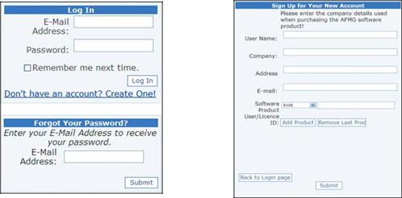
If
you
are
up-
dating an existing program and don’t know your User’s ID number, open Win-dows Explorer and browse to C:\Program Files\EASE 4.0\ EasePath\User ID. Your User ID is stored there. Note that on your computer, the EASE file may be identified EASE 4.1,EASE 4.2 or EASE 4.3 instead of EASE 4.0.
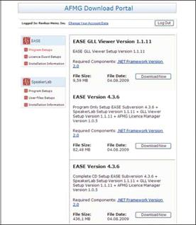
When you have your password enter it into the Password field and press Log In to open the download window.
When the Download window opens, select Program Setups and download ei-ther the Program Only Setup or the Complete CD Setup. The Complete CD Setup includes the associated Data Files (Speaker & Material data files, etc.) which you will need if you are installing EASE for the first time on your ma-chine. The Program Only Setup does not include the data files. When the Save As dialog box appears note where the file will be saved on your computer.
If EASE Guard is not already installed on your machine from a previous 4.0, 4.1 or 4.2 installation, also select Licence Guard Setups and download the EASE Guard setup archive belonging to your EASE User ID.
9
EASE 4.3 User’s Guide & Tutorial

Make sure that you have Microsoft .NET 2.0 Framework installed on your machine. Ease 4.3 needs it to operate. If you don’t have it, click on Net Framework to connect to the MS download site and download it.
The EASE GLL Viewer is a separate program that allows users to view GLL loudspeaker data created in AFMG’s SpeakerLab program and stored in the GLL data format. Both are new no-charge additions to EASE and becoming increasingly popular as more manufacturers de-velop loudspeaker data in the GLL format.
The GLL (Generic Loudspeaker Library) is a comprehensive, descriptive, object oriented loudspeaker data format designed to store and exchange complex data on loudspeaker systems and other acoustic sources. If you are not familiar with the GLL concept, refer to the GLL/SpeakerLab section of this manual.
We suggest you download and install both the GLL Viewer and SpeakerLab and become familiar with them. One word of caution; if you decide to Install SpeakerLab, be sure to also download the SpeakerLab User Files Setups. EASE and SpeakerLab are separate programs and have separate license keys. You will need the SpeakerLab User Files to obtain a license key for SpeakerLab.
When the downloads are completed, extract (unzip) the EASE4.3.zip file. You may also want to burn the contents of the EASE CD setup folder onto a CD for backup purposes. If you will be installing 4.3 on several machines, it’s a lot easier to do it from a CD than it is to re-peatedly download it.
Remember: If you are updating an existing EASE installation, you need to first “Upload “ your License Key. Otherwise, you will lose your license key during the update. Open EASE and go to Help\Register and press the Upload button.
If you are updating an existing installation to the MS file structure, be aware that doing a Complete install will probably create a second set of data files unless you move your old data files before installing the new ones.
The install program will not detect the existing EASE40Data folder on your C: drive and will create a new one. To prevent this from happen-ing, XP users should first move their EASE40Data folder to C:\ Documents and Settings\All Users\Shared Documents\ and Vista users to C:\Users\Public\Documents\. The install program will then detect the old data and give you the option of leaving it untouched or of overwrit-ing/updating it.
Doing a Program Only install will not produce a second set of data files, but after the installation is completed you will probably want to move your old data/project files to the new directory locations or change the path setups in EASE to point to the old file locations.
When you ready to begin the installation, double click on Setup.exe in the EASE 4.3 folder to start the installation.
During the installation you may encounter Shared File Detected and Read Only File Detected dialog boxes. In both cases select Don’t dis-play this message again and then click on Yes.
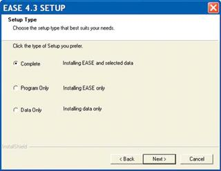
After accepting the License Agreement, an EASE 4.3 Setup window will open; select the Complete install unless you have reason to install only the program or just the data files.
The EASE program will install first.
10
Chapter 1: Installation and Registration

If you are updating an existing installation, a Remove or Repair dia-log box will open next. Select Remove.
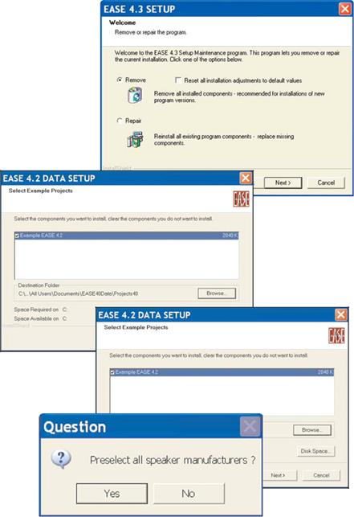
The Reset all installation adjustments to default values box needs to be checked by all VISTA users who are updating an earlier 4.xx in-stallation. We also recommend that XP users do the same.
Installation of the data files will begin as soon as the EASE program files have been installed . All you need to do is to follow the prompts and select the data you want to install.
We recommend installing the Examples and either the English or German Material Database. You definitely need one of the Material databases.
Note that before the Speaker Data installa-tion begins, you are given the option of pre-selecting all the Speaker Data files for installation or of proceeding to the next screen and individually selecting the file you want.
The complete Speaker Database includes over 80 manufacturer’s products and occu-pies over 600 MB of disk space, so you may want to pick and choose what manu-facturers you want to include in your data-base. You can always add one of the manufacturer’s databases at a later time.
After the EASE installation is completed, the installer will proceed to install SpeakerLab and the GLL Viewer. Just follow the prompts to in-stall them.
When the program installation is complete, in-stall the EASE Guard license control program from the EASE 4.3 EASE Guard License Con-trol CD or by executing the EASE Guard setup file you downloaded from the web.
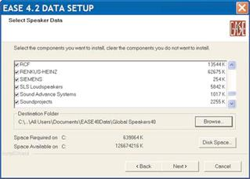
Note that:
1. Before you can use EASE, you will have to install the EASE Guard License Control program and download a license key.
2. Before you can use SpeakerLab, you will have to install the
SpeakerLab User Files and go to the AFMG License Manager on your desktop to download a SpeakerLab license key.
3. The EASE GLL Viewer does not require a license key.
11
EASE 4.3 User’s Guide & Tutorial

Registration Instructions
Your EASE JR / EASE License allows you to install and run the program simultaneously on 2 machines. Use of the program is controlled by License Keys (sometimes referred to as User Keys) issued by AFMG with each EASE License entitling you to 2 License Keys.
If you want to use the program on more than 2 machines, you must purchase additional License Keys. Additional License Keys are avail-able in sets of two and allow you to use the program on 2 additional machines.
License Keys are managed and controlled by the EASE Guard License Control program.
Note that SpeakerLab is a separate program and has its own License Manager program and license keys. Please refer to Chapter 14 for details.
Key elements of the EASE Guard license control program are the:
USER ID Number
The USER ID number is the identification number assigned to your company at the time you purchased the License. It includes details on any previous EASE licenses you owned and identifies what version of EASE you purchased; for example EASE or EASE JR. You cannot obtain License Keys without it.
If you received delivery of your program over the web, your User ID number was included in the e-mail letter of download instructions you received from AFMG. If you purchased backup CD’s, you will find your USER ID number on the rear of the EASE and EASE Guard CD jewel cases.
Reference File
The Reference File (sometimes called Reference Key) is a file (an .erf Ease Reference File) generated by the EASE Guard license control program. It identifies your computer and its operating system and is linked to your License Key. This file is different for each computer.
Any change in your computer’s operating system will be detected by EASE Guard and the link between your computer and the Li-cense Key will be broken and you will no longer be able to use the program. You will have lost your License Key and will not be able to run EASE until you have obtained a replacement from AFMG.
License File
The License File (usually called a License Key or a Users key, and sometimes referred to as a a Seat) is a file (an .elf Ease License File) generated by ADA. It is linked to your USER ID Number and to your computer’s Reference File and unlocks the specific EASE version you purchased.
Obtaining a License Key
1. As soon as the EASE Guard installation is completed, start EASE by double clicking on the EASE Icon.
2. Then double click on the Register Icon in the EASE 4.3 desktop window or open the Help pull down menu and select Register. This will open the EASE Registra-tion prompt shown below.
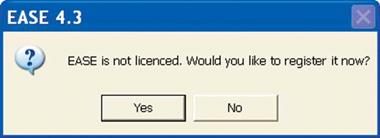
12
Chapter 1: Installation and Registration

3. Answering Yes will bring up the dialog box shown below.
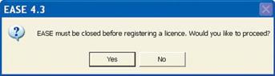
An affirmative answer will close EASE, launch the EASE Guard program and open the window shown below.
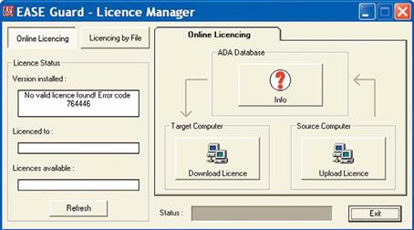
Notice that it tells you a valid license has not been installed on your computer.
Clicking on the big Download License button will connect you to the EASE license key download site on the ADA server, send your com-puter’s reference information to the site and, if everything checks out, generate your License Key and install it on your computer. The entire operation is automated and takes only a few seconds.
Notice that after the License Key has been installed, the License Status fields will now show what version of EASE is installed, your com-pany name and the number of license keys installed on your computer. It will show 1, since you downloaded only one License Key.
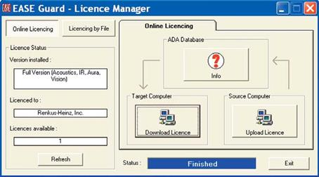
If you now press the Info button, it will tell you how many License Keys are still available for download. Do not download them onto your computer unless you have a specific need for them. They are safer on ADA’s site than they would be stored on your computer.
13
EASE 4.3 User’s Guide & Tutorial

If you have a second computer with Web access, you can download a License Key to it by following the same procedure you used with the first computer. Other users within your company can also obtain License Keys for their computers, if additional License Keys are available.
The license key download feature usually works flawlessly. If it doesn’t, an error message will let you know there is a problem.
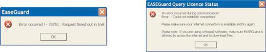
One common reason for the download procedure not working properly is that your Firewall/Virus protection system is blocking the download. Try turning it Off.
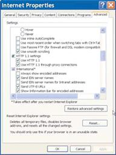
If you do not have automatic access to the Web and must “log on” to gain access, be sure to “log on” to the Web before starting the Online Licensing procedure. It could be that the download procedure is “timing out” before the connection is established.
Your browser’s HTTP1.1 setting can also be the source of the problem.Open your browser’s property’s folder and checking its setting. It should be set to “Use HTTP1.1” if you do not have a proxy server between your computer and the web. Otherwise, set it to “User HTTP1.1 through proxy connections”.
If none of these suggestions solve the problem, open the Register window and click on Licensing by File. See below. Note that the right portion of the window changes and intro-duces new buttons and tabs.
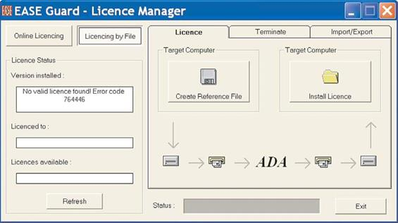
.
14
Chapter 1: Installation and Registration

Licensing By File
1. From the Licensing by File/Register window, click on the Create Reference File button. When the Save As dialog box appears select the stor-age location for the .erf file; for example, Desktop or My Documents. Click on Save.
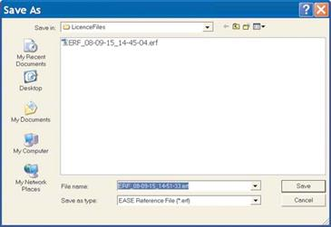
When the process is completed, a dialog box will appear asking if you want to automatically send this file to ADA.
If you are using Outlook as your e-mail server, answering Yes will open an e-mail template ad-dressed to ADA with the .erf attached. In the body of the e-mail, ask for a License Key and send the e-mail to them.
Within 24 hours (weekends excluded) you will receive an e-mail response from them with an .elf Ease License File attached. Copy the .elf file to a storage location on your computer. The return to the Registration/Licensing by File window and press the Install License button. Browse to the .elf file and install it into EASE (press Save).
ADA also maintains a license key download site which enables you to download the .elf License Key without the delay associated with using e-mails to request and receive the file. Open your web browser and go to:
http://www.ada-acousticdesign.de/EASEOnlineLKG/CreateLicenceFile.aspx.
When the download window opens, enter your User ID number and follow the instructions to generate, download and install a License Key.
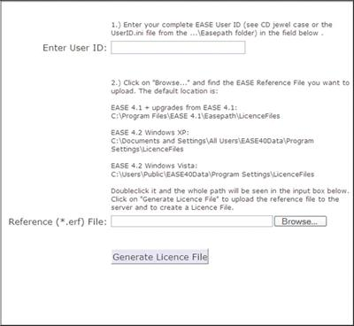
15
EASE 4.3 User’s Guide & Tutorial

Exporting License Keys
From time to time you may want to Export (move) a License Key from your computer to another computer.
To Export a License Key, in the Register/Licensing by File window click on the Import/Export tab to open the window shown below.
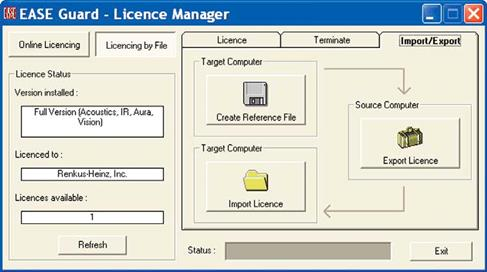
Exporting a License Key from your computer (we’ll call it the Source computer) to another Computer (referred to as the Target computer in the program) is a multi-step procedure:
1. First, you must load EASE and EASE Guard on the Target computer and obtain its Reference File. Open EASE on the Target computer and go to Register/Licensing by File and Import/Export to open the window shown above; click on the Create Reference File button. This will generate the Target computer’s .ERF Reference File; follow the prompts to save it to a logical location. Then transfer (move) it to your computer.
2. Open EASE Guard in your computer (the Source computer) and go to the Import/Export window and click on the big Export License but-ton. This will open an Open File dialog window; browse to the .ERF Reference File you just created, select it and click on Open. This will link the Reference File to your computer’s License Key and generate a .ELF Ease License File. Follow the prompts to save it to a logical location and then transfer (move) it to the Target computer.
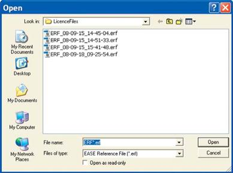
3. Return to the Import/Export window on the Target computer and press the Import License button to open an Open File dialog box. Browse to the .ELF File, select it and then click on Open to install the License Key on the Target computer.
16
Chapter 1: Installation and Registration

Terminating (Removing) License Keys
There are two ways to remove a license key from your computer to prevent its being lost while you upgrade your operating system or when you are replacing it with a new computer. This protects you from losing your License Key in the transition. Remember, any change in your computer’s operating system will be detected by EASE Guard and the link between your computer and the License Key will be broken.
The recommended way, and the simplest way, is to Upload your License Key to the ADA site and then Download it after your system is up-graded or Download it onto your new computer. To do this, open EASE and go to Register under the Help pull down menu and click on the Upload button.
If you have problems uploading the License Key, you can also officially terminate it. To terminate your computer’s License Key, select the Terminate folder under the Register/Licensing By File window. Then press the Terminate Licence button.
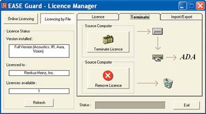
This will open a Save File window. Enter a logical location for the file and then click on Save. A Send E-mail Now prompt will appear. If you are running Outlook, clicking on Yes will send the Termination file to ADA. If you don’t have direct access to the web or the e-mail template doesn’t open, Save the file and then use a computer that has E-mail capabilities to E-mail it to licence@ada-acousticdesign.de. Be sure to tell ADA why you have sent the Termination file to them and ask them to place a replacement key in your file.
Remove License
The Remove License button in the Terminate window is used only to correct licensing problems resulting from software or hardware errors. Don’t use it unless you are having problems and you are told to use it by ADA or the Renkus-Heinz support staff. Don’t use it without our knowledge and consent, as it will remove all licensing information from your computer and complicate the task of recovering a lost License Key.
Protect Licence
For those who want to maintain tight control over their EASE License Keys, EASE 4.3 includes a Protect Licence feature. It is accessible under the Help pull down menu.
Protect Licence, when activated, removes the EASE Guard License Control program from the computer without removing the License Key. This makes it impossible for the user to access the EASE website to upload or download additional License Keys or to export the key to another computer.
Program Updates
The development staff at ADA is constantly updating the EASE program. The latest updates are stored on the ADA site and can easily be downloaded by any licensed EASE user having access to the web. Open the Help pull down menu and select Ease Update to connect to the ADA download portal.
17
EASE 4.3 User’s Guide & Tutorial

Speaker and Material Database Updates
The latest updates to the loudspeaker and wall material databases are also available to you. Selecting DataBase Update from the Help pull down menu will open the Update Manager. The down arrow allows you to select either the Speaker or the Material database for review.
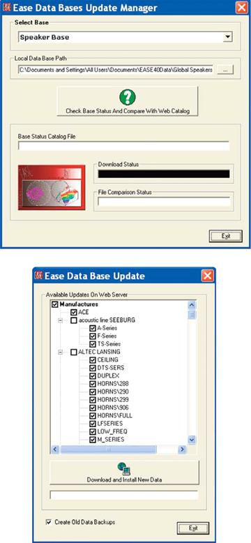
Clicking on Check Base Status and Compare With Web Catalog will compare the database on your computer with the ADA maintained database and produce a listing of the data files that are missing and/or have been updated. All you need to do is the check the files you want to download.
18
Chapter 1: Installation and Registration

Recovering Lost License Keys
At some point in time through no fault oy your own you may lose a License Key. Your hard drive will crash and burn, someone unfamiliar with EASE will decide to reformat your computer without your knowledge or some other unforeseen event will occur.
When this happens, it is important that you get in touch with ADA and ask for a replacement as soon as possible. Don’t wait until you have an urgent need to use the program
Recovering a lost EASE or EASE JR license key is a relatively simple process , but it usually takes at least 24 hours as each request is personally reviewed.
Open EASE/EASE JR on any machine that has both EASE and EASE Guard installed.
Select Create Status Report from the Help pull down menu.
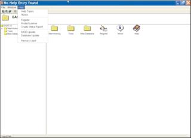
Create Status Report will gather all the computers licensing files into a single EASE40Info.Zip file that you can send to ADA along with a request for a replacement license key.
Note: If the EASE program won’t open, go to Start/All Programs/EASE/Tools and click on Create Status Report to activate it.
Selecting Create Status Report will open the familiar Window’s “Save” screen giving you the opportunity to save the file under another name and/or to choose a different file location.. We suggest you accept the default name and location. Clicking on Save will open the dia-log screen shown below.
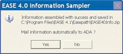
If you are using Outlook as your e-mail client, clicking on Yes will open an e-mail template addressed to ADA with the .info file attached.
If you are not using Outlook you may have to create a new e-mail to ADA and attach the .info file to it. The automatic send routine does not work on all e-mail clients.
The e-mail should be sent to licence@ada-acousticdesign.de. Be sure to explain in the body of the e-mail what has happened and ask for a replacement license key. Otherwise, ADA won’t know why you sent the info file to them. You should hear from them within a working day.
19